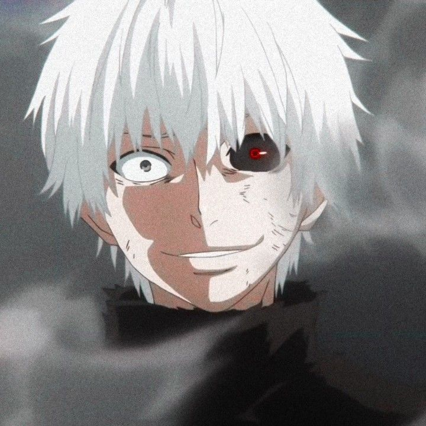
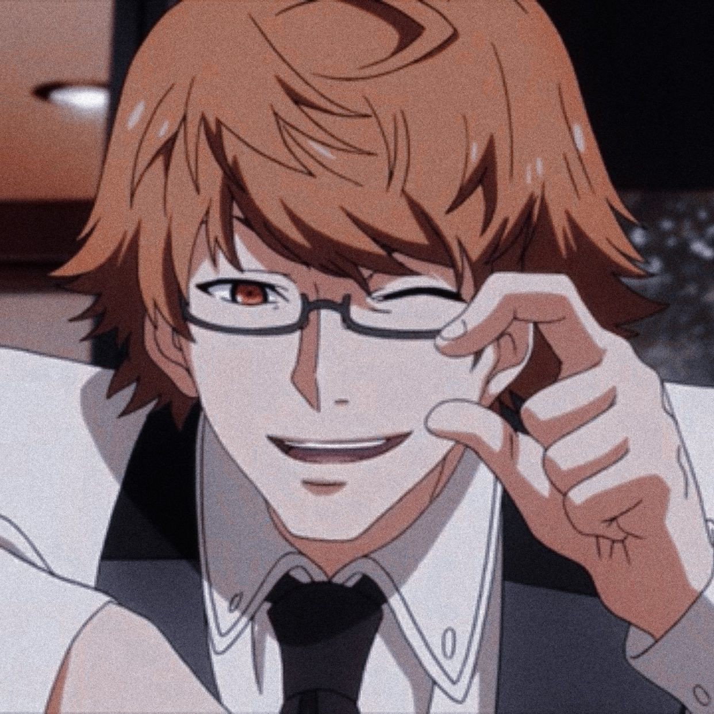

Tokyo Ghoul is a media franchise based on the manga series of the same name,
written and illustrated by Sui Ishida. It was later adapted for an anime produced by the famous Studio Pierrot.
The anime has four seasons and has officially ended. The manga is also finished.
Characters


What is tokyo ghoul?
It is a horror production with explicit violence and a supernatural setting that presents a city of Tokyo in which innocent people die at the hands of ghouls,
mysterious beings that feed on humans.
Featured article
Kaneki Ken
Ken Kaneki (金木 研かねき けん, Kaneki Ken?) is the main protagonist of the Tokyo Ghoul and Tokyo Ghoul:re series.
He was previously a student of Japanese literature at Kamii University.
His life changed radically after having an encounter with a Ghoul from which they transplanted a kidney and other digestive organs, turning him into a One-Eyed Ghoul.
After a series of events, he decides to join Anteiku as a part-time waiter, while trying to live a life as a human.
He is named by the CCG as Patched Eye (眼帯, Gantai?).
Do you want to know more? see our recommendations for you...